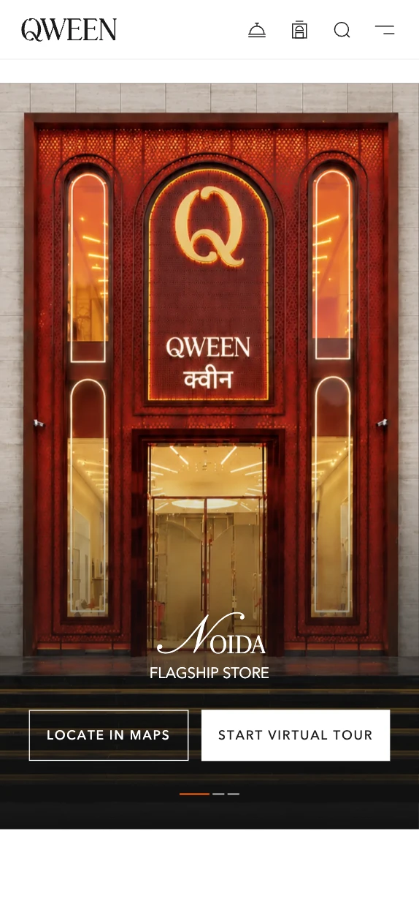
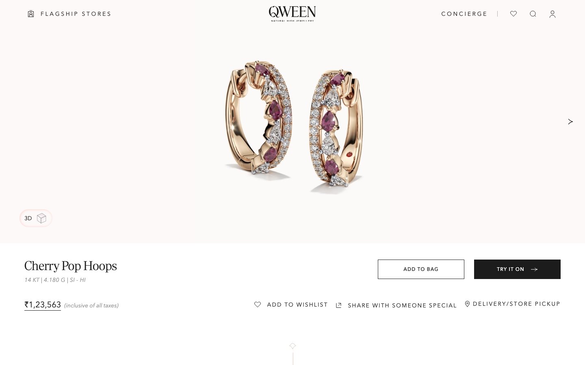
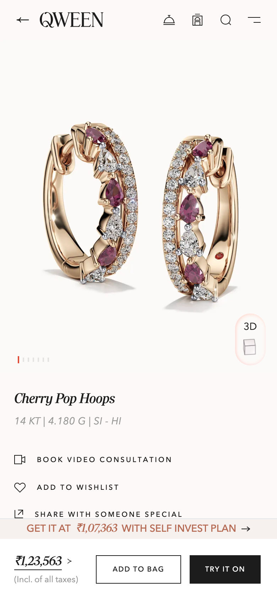
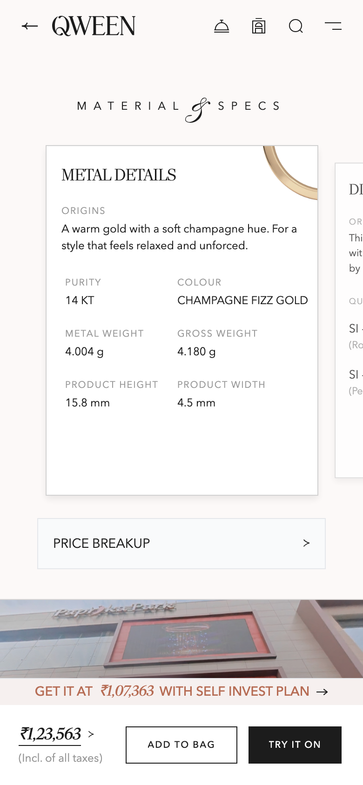
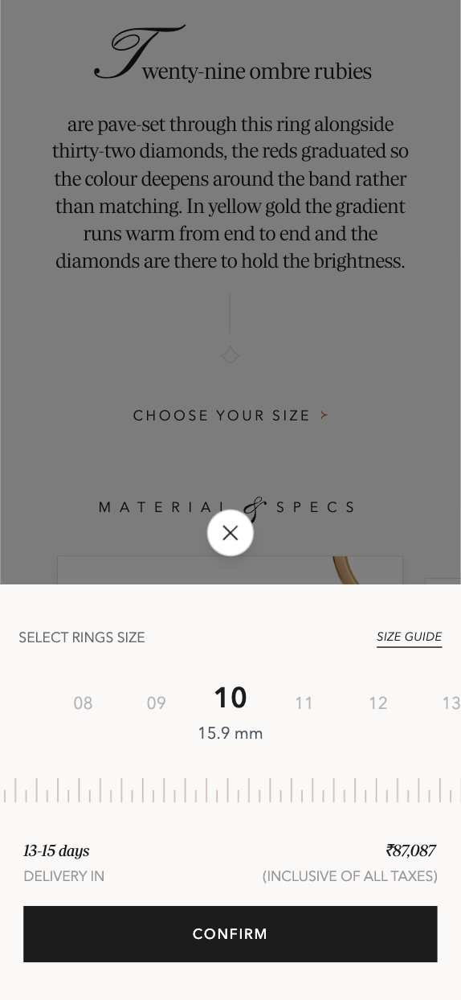
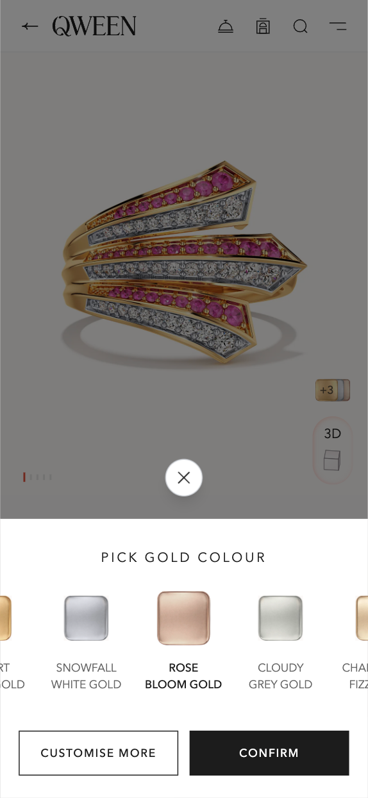
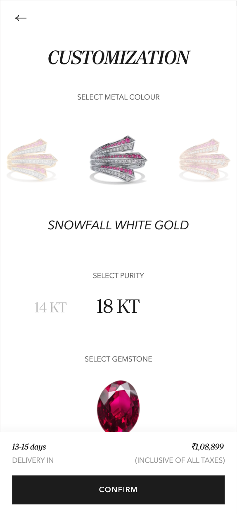
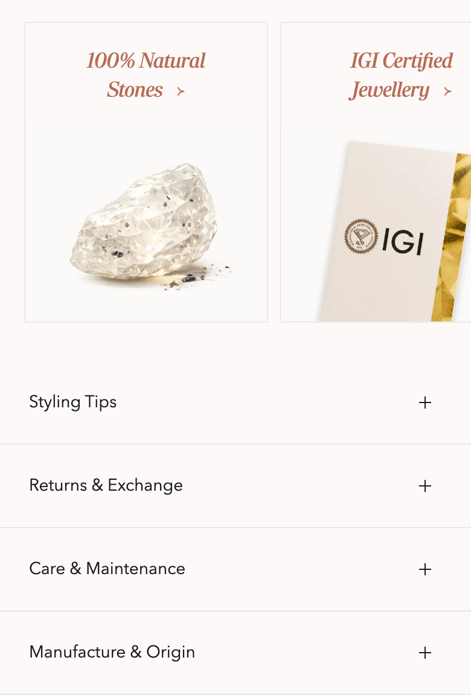
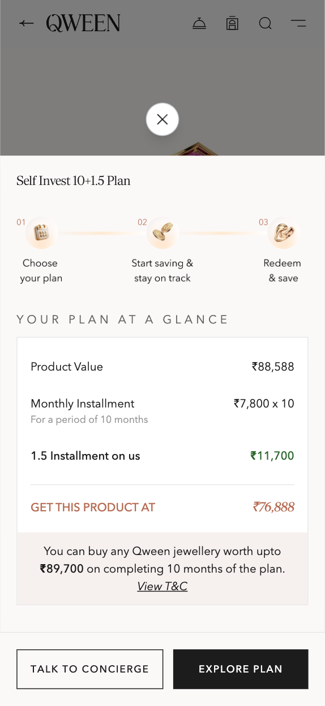

The
Show
room

WhereQWEEN flagship
Feels likea house
Doubts answered
- See
- Touch
- Try
- Ask
- Understand
- Trust
- Buy
Product Design Lead · Responsive web, mobile-first · Shipped, ongoing
01 The problem

Doubts answered

Doubts answered
The buyer isn’t resisting a sale. They’re missing the certainty a showroom gives for free.
02 The insight
We sat with the people who sell jewellery for a living, then checked their instincts against buyer interviews and session recordings. Five doubts kept stopping the sale.
Buyers look for the certificate and the returns policy first.
Buyers ask what the piece will be worth years from now, not just today.
Few read them, but everyone checks they exist.
Above a price point, buyers want to see it in a store first.
Buyers send pieces to a partner or parent before buying.
03 The approach
Principles are only useful when they can settle an argument. Each of these carried a rule, so debates about taste became debates about the rule.
Let the jewellery sell itself before asking customers to evaluate it. The piece is the interface; chrome recedes, and no UI element overlaps product photography except a near-silent purchase bar.
Reduce the distance between digital and physical. Answer scale by comparison, not measurement, and let the buyer see how a piece behaves before they commit.
Reveal information when customers need it. A summary line is always visible; the full specification is one interaction away. Present, complete, never imposed.
Make reassurance part of the purchase journey. Certification, hallmarking and returns move out of the footer and in front of the price, where the doubt actually occurs.
Self-service shouldn’t mean being left alone. A way to reach a person stays within reach throughout, so the experience never traps a hesitant buyer.
04 The product experience
Everything before this page builds desire. This page has to convert it into a decision worth six figures, made alone, on a phone, without a person in the room. It is the hardest surface in the product and it received the most work.
The PDP is the central artefact, shown large, never as a thumbnail inside a card.

Before buyers evaluate a piece, they need to want it.
A photo is one viewpoint under one light. These tools let the buyer bring the piece closer before they commit.
Rotate and zoom to see proportion, depth and how the setting sits.
See the piece on your own hand, ear or neck, at true scale.
Book a video consultation and see the piece in an expert’s hands, moving under real light.

The summary line reads as a sentence, not a table: stone count, total carat weight and metal, with the full breakdown one interaction away. Research said buyers check that the detail exists far more often than they read it, so it’s present and complete, but never imposed on the majority.
Give customers enough product truth to make an informed decision without overwhelming them.
Size, metal colour, purity and gemstone are decided in bottom sheets over the product, not on separate pages. Each choice updates the delivery window and the price in place, so the buyer never loses sight of the piece they are deciding on.



05 Trust
Certification and returns sat in the footer, so buyers left mid-decision to find them, and often didn’t come back. Now trust is stated before the price.
Trust isn’t a footer detail.

A fact, not a marketing adjective.
The real certificate, opened in place.
Promised at the moment of hesitation.
The answer to “what if I’m wrong?”
06 In store
Some buyers need to see a piece in person before they commit. The product page opens straight into the flagship: step inside, walk the floors, then plan the visit.
“Find this item in store” sits on the product page, over a view of the flagship entrance.
A 3D tour of the store, floor by floor, with experiences and the persona zone a tap away.
The Noida flagship, with directions, a virtual tour and visit booking.

07 Self Invest Plan
The Self Invest plan turns a single large payment into ten monthly instalments, with one and a half instalments added by QWEEN. It is surfaced on the product page as the price the buyer could pay, and explained in three steps (choose, save, redeem) with a concierge one tap away.
08 Outcome
For buyers, the questions that used to end a session now have answers in the place the question occurs.
For the business, the design system and content model outlived any individual page. New collections launch against an existing structure instead of a new design cycle.
For the team, motion tokens, a photography shot list and a merchandising contract turned recurring debates into settled defaults.
QWEEN is a growing brand rather than a controlled experiment, so this study reports qualitative shifts rather than before-and-after numbers.
Same facts · new order
09 Reflection
The content barely changed. The order did: trust before price, scale before specs, story before both.
When a purchase is rare, expensive and emotional, the problem is doubt, not navigation. Find the order of doubts, and the interface mostly designs itself.
Feature use
Time on the product page
Analysed 30,000 PDP sessions from 1 to 31 October 2026, calculating feature adoption as unique interactions divided by total sessions, and time-on-page engagement using 15s, 30s and 100s active-session thresholds.